00이 매뉴얼에 대하여
건폐율 · 용적률 조례 적용 계산기는 대지가 속한 용도지역의 건폐율 · 용적률 최대한도를 국토계획법 시행령 제84조 · 제85조(법정 상한)와 시 · 군 도시 · 군계획 조례(실제 적용값)로 나란히 보여 주고, 대지면적을 넣으면 최대 건축면적 · 연면적을 계산해 A4 검토 계산서로 정리하는 도구입니다. 조례값은 전북특별자치도 14개 시 · 군 원문을 내장했습니다. 근거는 국토의 계획 및 이용에 관한 법률 제77조 · 제78조(2026. 7. 1. 시행), 같은 법 시행령 제84조 · 제85조(2026. 8. 18. 공포, 2026. 9. 18. 시행), 전북특별자치도 14개 시 · 군 도시 · 군계획 조례입니다.
| 항목 | 내용 |
|---|---|
| 대상 프로그램 | 건폐율 · 용적률 조례 적용 계산기 MANMIN Ver-5.1(v5.1.0) — 탭 막대 「📘 매뉴얼」 버튼으로 이 문서가 열립니다 |
| 접속 주소 | manminkim-eng.github.io/Land-Use |
| 매뉴얼 판 | Ver-5.1 (화면 표기와 같은 판 번호, 초판) · 2026-10-15 · 작성 김만민 건축사(㈜대성건축사사무소) |
| 내려받기 | PDF(A4) · 건폐율 · 용적률 조례 적용 계산기 열기 |
| 예제 | 본문 그림은 예제 A(익산시 준주거지역 · 대지 500㎡)로 캡처했습니다 — 시행령 70 % · 500 % → 익산시 조례 70 % · 350 % · 최대 건축면적 350㎡ · 최대 연면적 1,750㎡. 예제 B(익산시 계획관리지역 1,000㎡) · C(전주시 일반상업지역 800㎡)는 부록 A2 |
| 근거 법령 | 국토의 계획 및 이용에 관한 법률 제77조 · 제78조(2026. 7. 1. 시행), 같은 법 시행령 제84조 · 제85조(2026. 8. 18. 공포, 2026. 9. 18. 시행), 전북특별자치도 14개 시 · 군 도시 · 군계획 조례 — LawMCP(국가법령정보센터) 원문 대조(2026-10-15) |
| 읽는 순서 | 처음이면 1장 → 2장(따라하기) → 필요할 때 3장(화면별 상세). 건축 계획 · 허가 검토에 쓰기 전에는 4장(법령 해설) · 5장(작업 방법) |
01한눈에 보기
설치 없이 브라우저에서 바로 실행되는 단일 페이지 앱(PWA)입니다. 입력한 내용은 브라우저 안에서만 계산되며 서버로 전송되지 않습니다.
무엇을 계산하나
21개 용도지역의 시행령 상한 · 조례 적용값, 최대 건축면적(대지 × 건폐율) · 최대 연면적(대지 × 용적률) · 참고 층수
조례 자동 적용
전북 14개 시 · 군 도시 · 군계획 조례 건폐율 · 용적률 조문을 원문대로 내장 — 조문 · 시행일 표시
조건부 값 안내
성장관리계획구역 125 %, 산업단지 · 주거복합 등 조례 단서와 시행령 제46조 · 제47조 완화 범위를 함께 보여 줌
1-1. 화면 구성
- 1작업 탭 · 매뉴얼
- 2요약 스트립
- 3진행 단계
- 4입력 패널
- 5법령 vs 조례 비교
- 6판정 결과
- 7초기화 · 이용안내
| 영역 | 내용 |
|---|---|
| 헤더 · 탭 | 「⌨️ 검토 입력·결과」 → 「📄 A4 계산서」, 오른쪽 끝 「📘 매뉴얼」 |
| 요약 스트립 | 어느 탭에 있든 지자체 · 용도지역 · 법정 건폐율 · 용적률 · 조례 건폐율 · 용적률을 한 줄로 보여 줍니다 |
| 진행 단계 | ① 지역 · 지자체 → ② 용도지역 → ③ 대지면적 → ④ 결과 — 현재 단계가 초록 원으로 표시됩니다 |
| 왼쪽 입력 | 공사 정보(A4 표제) → STEP 1 지자체(조례) → STEP 2 용도지역 → STEP 3 대지면적 → 「⚡ 계산」 |
| 오른쪽 결과 | 법령 vs 조례 비교 → 판정 결과(건폐율 · 용적률 · 대지면적 기준 계산 · 안내) — 아래에 전체 용도지역 일람표 |
1-2. 작업 탭·근거 표시
- 1검토 입력 · 결과
- 2A4 계산서
- 3매뉴얼
- 4근거 · 시행일
헤더 오른쪽에는 적용 근거(국토계획법 제77조 · 제78조, 시행령 제84조 · 제85조)와 시행일 [시행령 시행 2026. 9. 18.]이 표시됩니다.
1-3. 설치·보관·매뉴얼
| 항목 | 내용 |
|---|---|
| 설치 | 휴대전화 · PC 브라우저의 「홈 화면에 추가」 · 「앱 설치」로 설치하면 오프라인에서도 열립니다(앱 본체만 — 매뉴얼은 온라인 전용) |
| 보관 | 계산 결과는 A4 계산서(인쇄 · PDF · JPG)로 남깁니다. 앱은 입력값을 서버에 저장하지 않습니다 |
| 매뉴얼 | 탭 막대 오른쪽 「📘 매뉴얼」 — 이 문서(HTML)와 PDF(A4) |
| 초기화 | 오른쪽 아래 「🔄 초기화」 — 지자체 · 용도지역 · 대지면적을 모두 지웁니다 |
021분 따라하기
예제 A — 익산시 준주거지역 대지 500㎡입니다. 아래 순서대로 넣으면 시행령 용적률 500 %가 익산시 조례로 350 %가 되고, 최대 건축면적 350㎡ · 최대 연면적 1,750㎡가 나옵니다.
- ① 공사 정보공사명 「익산시 ○○동 근린생활시설 신축공사」, 작성자 「김만민」 — A4 계산서 표제에 들어갑니다(3-1).
- ② 지자체광역시 · 도 「전북특별자치도」 → 시 · 군 「익산시」 → 「✅ 조례 데이터 적용: 익산시 도시계획 조례 제55조 · 제60조(시행 2025-12-31)」 안내가 뜹니다.
- ③ 용도지역「도시지역」 탭 → 대분류 「주거지역」 → 세부 「준주거지역」(3-2).
- ④ 결과 — 조례가 더 엄격「⚡ 건폐율 · 용적률 계산」 → 비교 창에 시행령 70 % · 500 %, 조례 70 % · 350 %, 판정 「조례가 더 엄격」(3-3).
- ⑤ 대지면적대지면적 500㎡(평 칸은 151.2평으로 자동 환산) → 최대 건축면적 500 × 70 % = 350㎡, 최대 연면적 500 × 350 % = 1,750㎡(3-4).
- ⑥ A4 계산서「📄 A4 계산서」 탭에서 「🖨️ 인쇄 / PDF 저장」 또는 「🖼️ JPG 저장」(3-10).
| 항목 | 예제 A |
|---|---|
| 지자체 · 조례 | 전북 익산시 — 익산시 도시계획 조례 제55조·제60조 (시행 2025-12-31) |
| 용도지역 | 도시지역 > 주거지역 > 준주거지역 |
| 시행령 상한 | 건폐율 70 % · 용적률 500 % (제84조 제1항 · 제85조 제1항) |
| 조례 적용값 | 건폐율 70 % · 용적률 350 % |
| 최대 건축면적 | 500㎡ × 70 % = 350㎡ |
| 최대 연면적(지상) | 500㎡ × 350 % = 1,750㎡ — 시행령 상한으로 계산하면 2,500㎡ |
03화면별 기능 상세
3-1. 공사 정보·지자체
- 1공사명
- 2작성자
- 1광역시 · 도
- 2시 · 군 (전북 14곳)
- 3조례 적용 안내 — 조문 · 시행일
| 항목 | 설명 |
|---|---|
| 공사명 · 작성자 | A4 계산서 머리에 그대로 들어갑니다. 비워 두면 「—」로 표시됩니다 |
| 광역시 · 도 | 17개 시 · 도를 고를 수 있습니다. 조례값이 내장된 곳은 전북특별자치도뿐이며, 그 밖 시 · 도는 「ℹ️ 조례 미내장」 안내와 함께 시행령 상한만 표시합니다 |
| 시 · 군 | 전북을 고르면 전주 · 군산 · 익산 · 정읍 · 남원 · 김제 · 완주 · 진안 · 무주 · 장수 · 임실 · 순창 · 고창 · 부안 14개 시 · 군이 나옵니다 |
| 조례 적용 안내 | 「✅ 조례 데이터 적용」 상자에 조례 제명 · 건폐율 조 · 용적률 조 · 시행일이 표시됩니다(예: 익산시 도시계획 조례 제55조 · 제60조, 시행 2025-12-31) |
3-2. 용도지역·대지면적
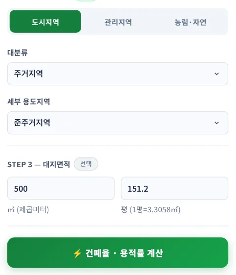
12345678- 1도시지역
- 2관리지역
- 3농림 · 자연
- 4대분류
- 5세부 용도지역
- 6대지면적 ㎡
- 7평 환산
- 8계산
| 항목 | 설명 |
|---|---|
| 도시지역 탭 | 대분류(주거 · 상업 · 공업 · 녹지) → 세부 용도지역 16개 |
| 관리지역 탭 | 보전관리 · 생산관리 · 계획관리 |
| 농림 · 자연 탭 | 농림지역 · 자연환경보전지역 |
| 대지면적 | ㎡ 또는 평 중 한쪽에 넣으면 다른 쪽이 자동 환산됩니다(1평 = 3.3058㎡, 소수 첫째 자리 표시). 비우면 비율만 보여 줍니다 |
| 계산 | 「⚡ 건폐율 · 용적률 계산」 — 지자체를 고르지 않아도 계산되며, 이때는 시행령 상한만 나옵니다 |
3-3. 법령 vs 조례 비교
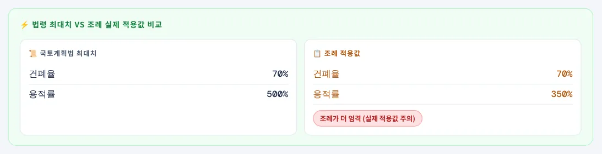
123- 1국토계획법(시행령) 최대치
- 2조례 적용값
- 3판정 — 조례가 더 엄격
왼쪽은 시행령 제84조 제1항 · 제85조 제1항의 용도지역별 상한, 오른쪽은 조례 적용값입니다. 판정 알약은 「조례가 더 엄격」(어느 하나라도 조례가 낮음), 「법령 = 조례 (동일)」 두 가지로 나옵니다 — 조례는 시행령 범위 안에서만 정할 수 있으므로(법 제77조 제1항 · 제78조 제1항) 조례가 더 높은 경우는 없습니다.
3-4. 판정 결과
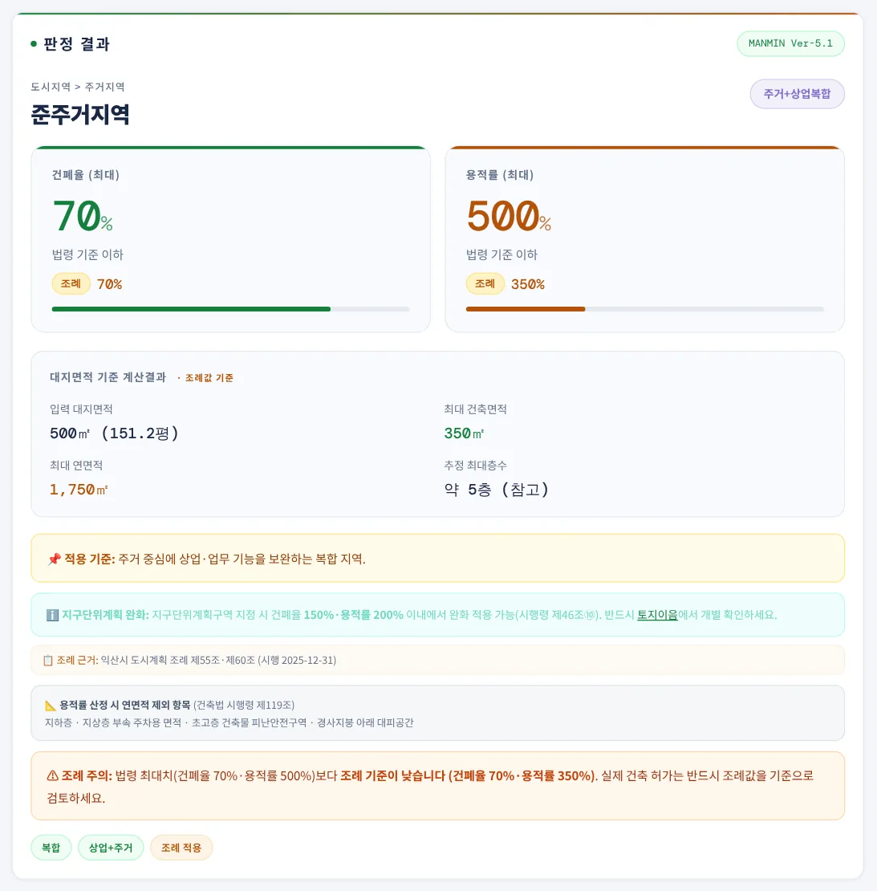
12345- 1용도지역
- 2건폐율 — 시행령 · 조례
- 3용적률 — 시행령 · 조례
- 4대지면적 기준 계산
- 5적용 기준
큰 숫자는 시행령 상한이고, 그 아래 「조례」 칸이 조례 적용값입니다. 대지면적 기준 계산결과는 조례값이 있으면 조례값(「· 조례값 기준」 표시), 없으면 시행령 상한으로 계산합니다 — 최대 건축면적 = 대지면적 × 건폐율, 최대 연면적 = 대지면적 × 용적률, 추정 최대층수 = 연면적 ÷ 건축면적(소수 버림, 참고값).
3-5. 조례 근거·조건부 값
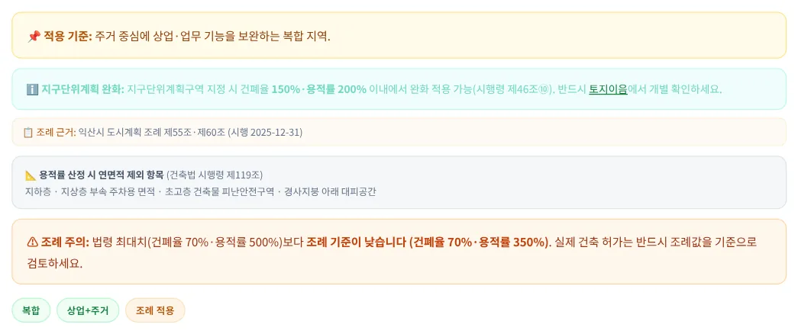
12- 1조례 근거 — 조문 · 시행일
- 2조례 강화 경고
| 상자 | 내용 |
|---|---|
| 📌 적용 기준 | 용도지역의 성격(시행령 제30조 세분 취지) 요약 |
| 📋 조례 근거 | 조례 제명 · 조문 · 시행일. 선택한 용도지역을 그 조례가 규정하지 않으면 「※ 이 조례에는 ○○지역 규정이 없어 시행령 상한을 표시합니다」(예: 임실군 제1종 전용주거지역) |
| ⚠ 조건부 값 | 조례의 단서 · 호 단위 값(성장관리계획구역 125 %, 산업단지 · 주거복합 · 유원지 등) — 해당하면 따로 적용합니다. 계산값은 조례 본문 값 기준입니다(4-5) |
| 📐 연면적 제외 | 용적률 산정 때 연면적에서 빼는 면적(건축법 시행령 제119조 제1항 제4호) |
| ⚠ 조례 주의 | 조례가 시행령보다 낮으면 「⚠ 조례 주의: … 조례 기준이 낮습니다」, 같으면 「✅ 조례 확인: … 동일합니다」로 표시 |
3-6. 사례 — 계획관리지역
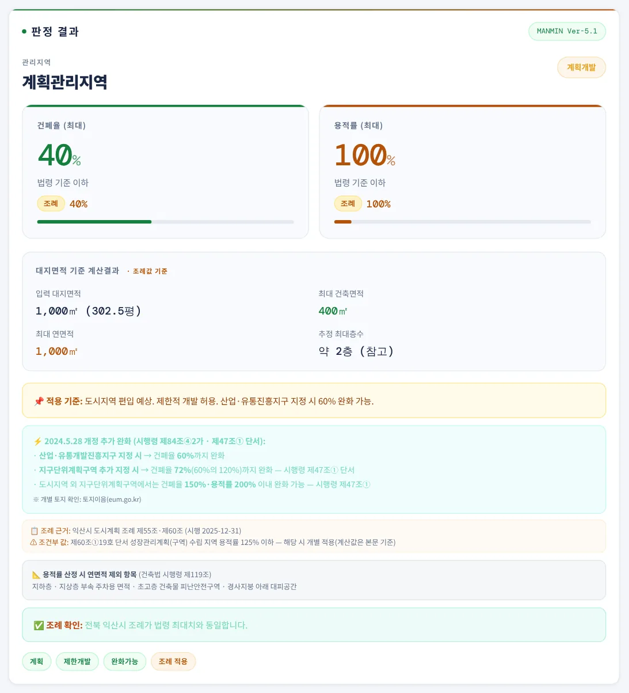
1234- 1건폐율 40 %
- 2용적률 100 %
- 32024.5.28 완화 — 제84조④ · 제47조①
- 4조건부 값 — 성장관리계획 125 %
계획관리지역은 시행령 · 익산시 조례 모두 건폐율 40 % · 용적률 100 %로 같아 최대 건축면적 400㎡ · 최대 연면적 1,000㎡입니다. 계획관리지역을 고르면 ⚡ 2024.5.28 개정 추가 완화 상자가 나옵니다 — 산업 · 유통개발진흥지구 지정 시 60 %(시행령 제84조 제4항 제2호 가목), 그 진흥지구에 지구단위계획구역을 지정하면 60 %의 120 %인 72 %(제47조 제1항 단서), 도시지역 밖 지구단위계획구역은 건폐율 150 % · 용적률 200 % 이내(제47조 제1항). 조례 근거 상자에는 「제60조①19호 단서 성장관리계획(구역) 수립 지역 용적률 125% 이하」가 조건부 값으로 표시됩니다.
3-7. 사례 — 전주시 일반상업
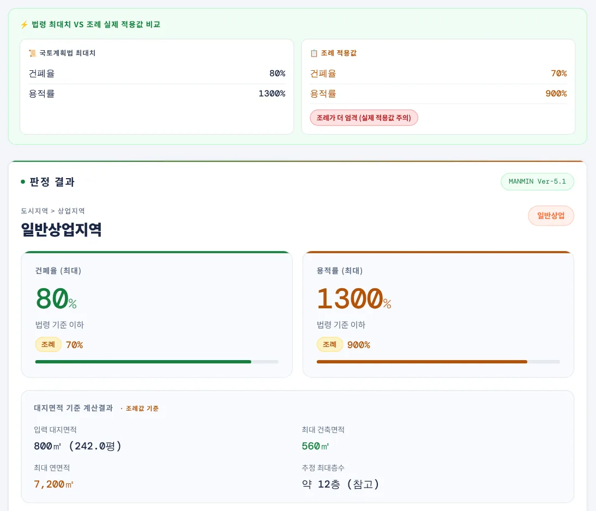
123- 1시행령 80 % · 1,300 %
- 2전주시 조례 70 % · 900 %
- 3대지 800㎡ 기준
시행령 상한 80 % · 1,300 %에 대해 전주시 도시계획 조례는 70 % · 900 %입니다(제45조 · 제47조). 최대 건축면적 800 × 70 % = 560㎡, 최대 연면적 800 × 900 % = 7,200㎡ — 시행령 상한으로 계산한 10,400㎡보다 3,200㎡ 적습니다. 조건부 값으로 「제47조 단서 주거복합건축물·오피스텔 용적률 600% 이하」가 함께 나옵니다.
3-8. 전체 용도지역 일람표
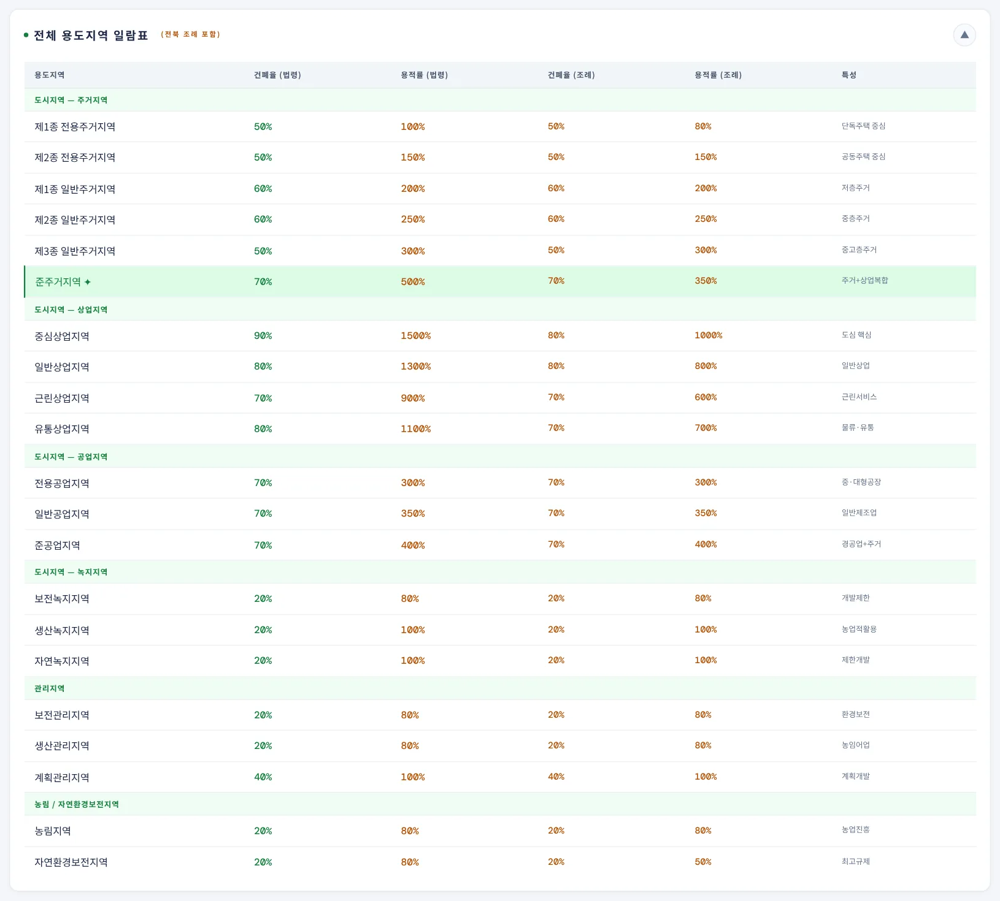
123- 1일람표 펼치기
- 2적용 조례 표시
- 3법령 · 조례 나란히
결과 아래 「전체 용도지역 일람표」 머리를 누르면 펼쳐집니다. 21개 용도지역의 시행령 상한과, 지자체를 골랐으면 그 조례값을 나란히 보여 주고 선택한 용도지역 줄을 강조합니다. 조례가 규정하지 않은 용도지역은 「—」입니다. 줄을 누르면 그 용도지역으로 바로 다시 계산합니다.
3-9. 이용안내·관련 법규 창
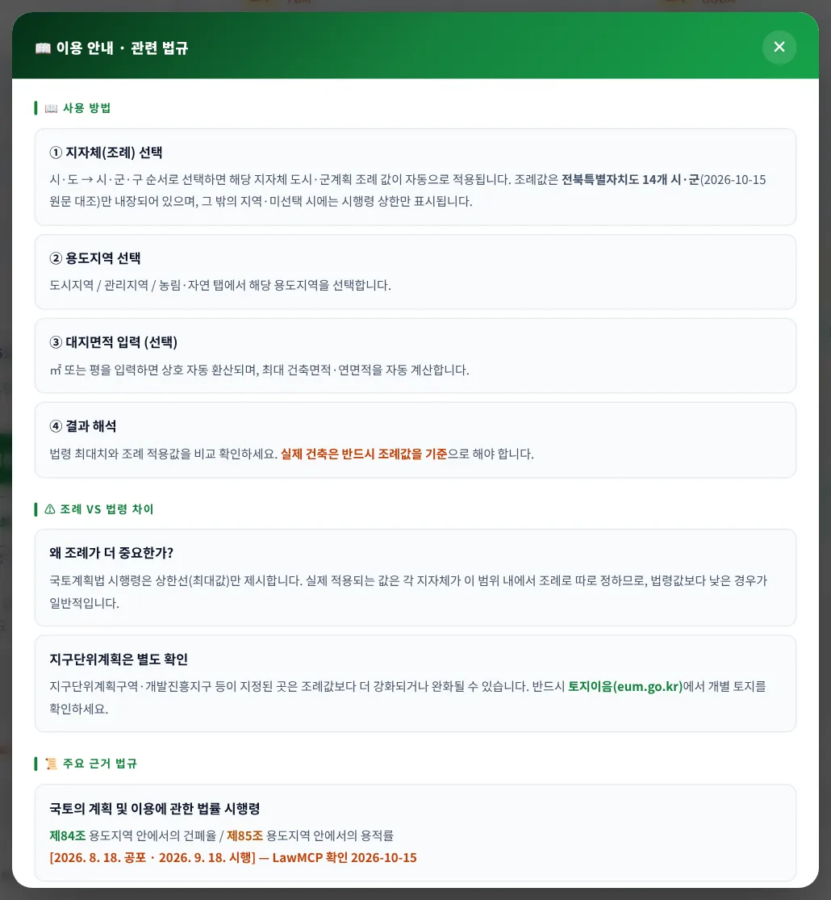
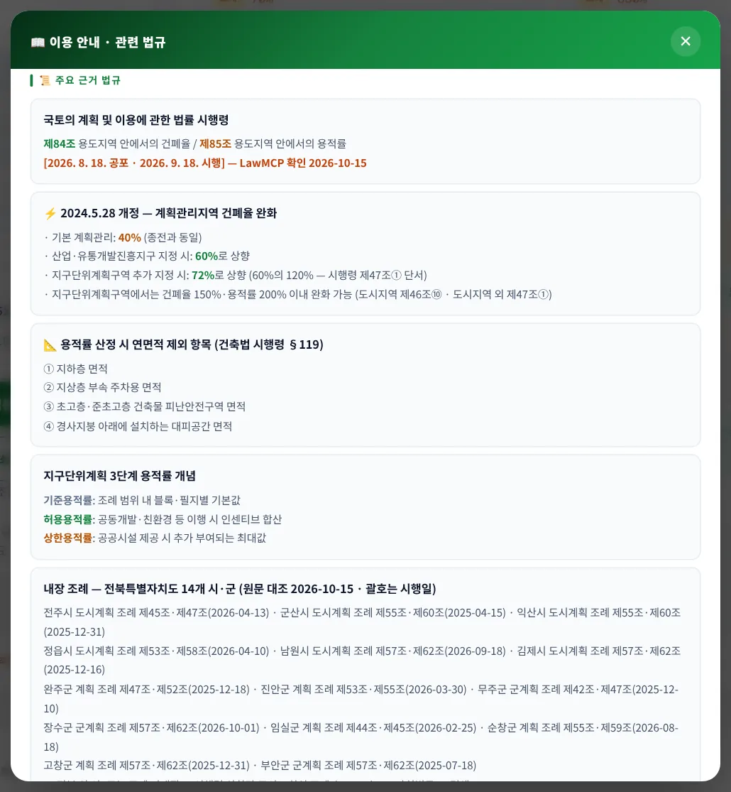
오른쪽 아래 「📖 이용안내」 버튼은 사용 방법, 조례 vs 법령 차이, 주요 근거 법규(시행령 시행일, 2024.5.28 계획관리지역 완화, 연면적 제외 항목, 지구단위계획 3단계 용적률, 내장 조례 14곳의 조문 · 시행일, 건축법 제55조 · 제56조)를 한 창에 보여 줍니다.
3-10. A4 계산서·출력
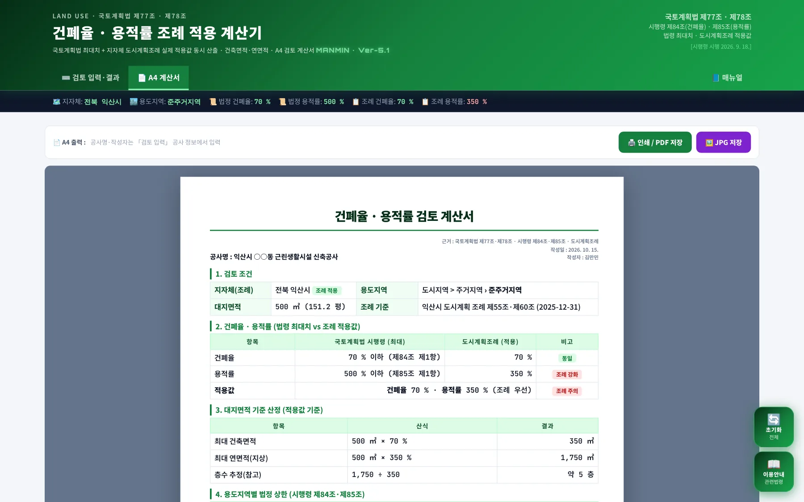
123- 1인쇄 / PDF
- 2JPG 저장
- 3A4 계산서
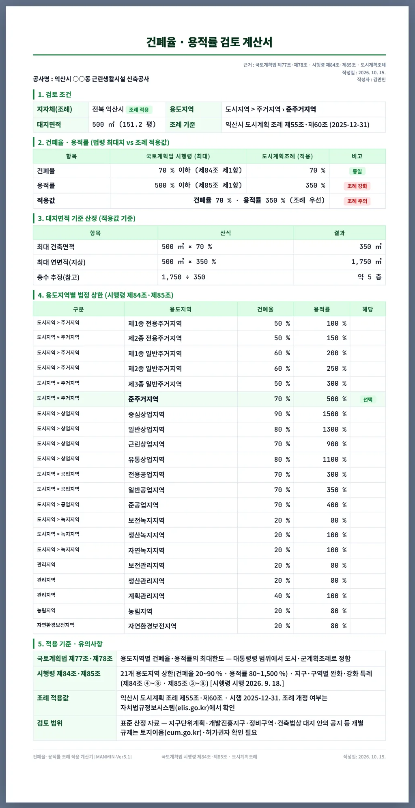
123456- 1공사명 · 근거 · 작성일
- 21. 검토 조건
- 32. 법령 vs 조례
- 43. 대지면적 기준 산정
- 54. 용도지역별 법정 상한
- 65. 적용 기준 · 유의사항
계산서는 1. 검토 조건, 2. 건폐율 · 용적률(법령 최대치 vs 조례 적용값), 3. 대지면적 기준 산정(산식), 4. 용도지역별 법정 상한(21개), 5. 적용 기준 · 유의사항 5개 절이며, 조건부 값이 있으면 5절에 「조례 조건부 값」 줄이 더해집니다. 화면과 인쇄 · JPG가 같은 내용입니다.
3-11. 휴대전화 화면
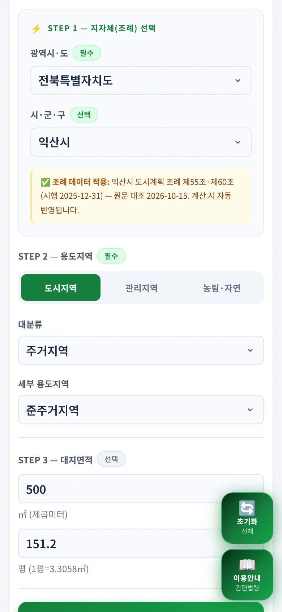
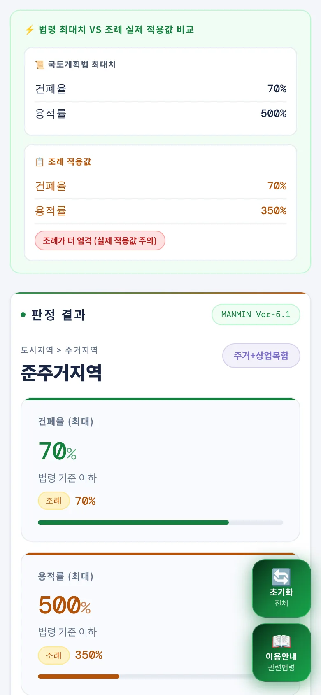
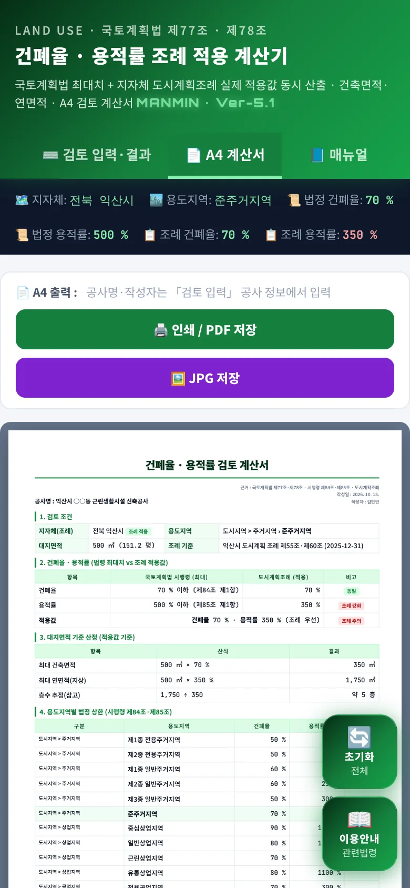
좁은 화면에서는 입력 카드와 결과 카드가 한 줄로 쌓입니다. A4 계산서는 화면 폭에 맞춰 축소해 보여 주며 인쇄 · JPG는 원본 A4 크기로 나옵니다.
04법령 해설
4-1. 근거 체계
| 법령 | 내용 |
|---|---|
| 국토계획법 제77조 제1항 | 용도지역의 건폐율 최대한도는 관할 구역의 면적 · 인구 규모 · 용도지역 특성을 고려해 법이 정한 범위(주거 70 · 상업 90 · 공업 70 · 녹지 20 · 보전관리 20 · 생산관리 20 · 계획관리 40 · 농림 20 · 자연환경보전 20 % 이하)에서 대통령령 기준에 따라 조례로 정함 |
| 국토계획법 제78조 제1항 | 용적률 최대한도 — 주거 500 · 상업 1,500 · 공업 400 · 녹지 100 · 보전관리 80 · 생산관리 80 · 계획관리 100 · 농림 80 · 자연환경보전 80 % 이하 범위에서 같은 방식으로 조례로 정함 |
| 시행령 제84조 · 제85조 | 세분된 21개 용도지역별 건폐율 상한(제84조 제1항)과 용적률 범위(제85조 제1항, 「○ 이상 ○ 이하」) — 이 범위에서 시 · 군 조례가 정함. 지구 · 구역별 특례는 제84조 제4항 ~ 제9항, 제85조 제3항 ~ 제8항 |
| 시 · 군 조례 | 「○○시 도시계획 조례」 · 「○○군 계획 조례」(군계획 조례)의 「용도지역 안에서의 건폐율」 · 「용도지역 안에서의 용적률」 조문 — 실제 허가 기준 |
| 건축법 제55조 · 제56조 | 건폐율 = 대지면적에 대한 건축면적 비율, 용적률 = 대지면적에 대한 연면적 비율. 최대한도는 국토계획법 제77조 · 제78조 기준을 따름(건축법이 완화 · 강화를 따로 정한 경우 그에 따름) |
LawMCP(국가법령정보센터) 원문 대조 2026-10-15 · 법률 2026. 7. 1. 시행본 · 시행령 2026. 8. 18. 공포(2026. 9. 18. 시행)본. 법률 시행예정 개정(2026-12-17 · 2027-05-13 · 2027-06-17)은 제77조 · 제78조 문언 변경이 없음을 확인했습니다.
4-2. 용도지역별 상한
| 용도지역 | 건폐율 상한(%) | 용적률 범위(%) | 전북 14곳 건폐율 | 전북 14곳 용적률 |
|---|---|---|---|---|
| 제1종 전용주거지역 | 50 이하 | 50 ~ 100 | 40 ~ 50 (13곳) | 80 ~ 100 (13곳) |
| 제2종 전용주거지역 | 50 이하 | 50 ~ 150 | 40 ~ 50 (13곳) | 100 ~ 150 (13곳) |
| 제1종 일반주거지역 | 60 이하 | 100 ~ 200 | 60 | 200 |
| 제2종 일반주거지역 | 60 이하 | 100 ~ 250 | 60 | 250 |
| 제3종 일반주거지역 | 50 이하 | 100 ~ 300 | 50 (13곳) | 300 (13곳) |
| 준주거지역 | 70 이하 | 200 ~ 500 | 60 ~ 70 | 350 ~ 500 |
| 중심상업지역 | 90 이하 | 200 ~ 1,500 | 80 ~ 90 (13곳) | 1,000 ~ 1,500 (13곳) |
| 일반상업지역 | 80 이하 | 200 ~ 1,300 | 70 ~ 80 | 800 ~ 1,300 |
| 근린상업지역 | 70 이하 | 200 ~ 900 | 60 ~ 70 (13곳) | 600 ~ 900 (13곳) |
| 유통상업지역 | 80 이하 | 200 ~ 1,100 | 60 ~ 80 (13곳) | 700 ~ 1,100 (13곳) |
| 전용공업지역 | 70 이하 | 150 ~ 300 | 60 ~ 70 (13곳) | 250 ~ 300 (13곳) |
| 일반공업지역 | 70 이하 | 150 ~ 350 | 60 ~ 70 | 300 ~ 350 |
| 준공업지역 | 70 이하 | 150 ~ 400 | 60 ~ 70 | 300 ~ 400 |
| 보전녹지지역 | 20 이하 | 50 ~ 80 | 20 | 50 ~ 80 |
| 생산녹지지역 | 20 이하 | 50 ~ 100 | 20 | 80 ~ 100 |
| 자연녹지지역 | 20 이하 | 50 ~ 100 | 20 | 80 ~ 100 |
| 보전관리지역 | 20 이하 | 50 ~ 80 | 20 | 50 ~ 80 |
| 생산관리지역 | 20 이하 | 50 ~ 80 | 20 | 80 |
| 계획관리지역 | 40 이하 | 50 ~ 100 | 40 | 100 |
| 농림지역 | 20 이하 | 50 ~ 80 | 20 | 80 |
| 자연환경보전지역 | 20 이하 | 50 ~ 80 | 20 (13곳) | 50 ~ 80 (13곳) |
용적률은 시행령 제85조 제1항이 「○퍼센트 이상 ○퍼센트 이하」 범위로 정하고 조례가 그 안에서 정합니다 — 앱은 상한만 표시합니다. 「(○곳)」은 그 용도지역을 규정한 조례 수입니다(임실군은 실제 지정된 14개 지역만 규정, 전주시는 자연환경보전지역 호가 없음).
4-3. 면적 산정
| 항목 | 내용 |
|---|---|
| 대지면적 | 대지의 수평투영면적 — 건축선과 도로 사이의 대지, 대지 안 도시 · 군계획시설(도로 · 공원 등) 부지는 제외(건축법 시행령 제119조 제1항 제1호) |
| 건축면적 | 외벽(없으면 외곽 기둥) 중심선으로 둘러싸인 수평투영면적 — 처마 · 차양 등 1m 이상 돌출 부분 산정 특례(같은 항 제2호) |
| 연면적(용적률 산정) | 각 층 바닥면적의 합계에서 ① 지하층 ② 지상층 부속 주차용 면적 ③ 초고층 · 준초고층 피난안전구역 ④ 경사지붕 아래 대피공간을 뺌(같은 항 제4호) |
| 추정 층수 | 연면적 ÷ 건축면적(소수 버림) — 건축면적을 모든 층에 같게 쓴다고 본 참고값이며 높이 · 일조 · 주차 기준은 따지지 않음 |
4-4. 전북 14개 시·군 조례
LawMCP(국가법령정보센터 자치법규) 원문 대조 2026-10-15 · 아래 「차이」는 시행령 상한과 다른 용도지역만 적었습니다(건폐 = 건폐율, 용적 = 용적률, %)
| 시 · 군 | 조례 · 조문 · 시행 | 시행령 상한과의 차이 |
|---|---|---|
| 전주 | 전주시 도시계획 조례 제45조·제47조 시행 2026-04-13 | 제1종 전용주거 건폐 50→40, 제2종 전용주거 건폐 50→40 · 용적 150→100, 준주거 건폐 70→60, 중심상업 건폐 90→80 · 용적 1,500→1,100, 일반상업 건폐 80→70 · 용적 1,300→900, 근린상업 건폐 70→60 · 용적 900→700, 유통상업 건폐 80→60 · 용적 1,100→700, 전용공업 건폐 70→60, 일반공업 건폐 70→60, 준공업 건폐 70→60, 보전녹지 용적 80→50, 보전관리 용적 80→50, 자연환경보전 규정 없음 |
| 군산 | 군산시 도시계획 조례 제55조·제60조 시행 2025-04-15 | 준주거 용적 500→400, 중심상업 용적 1,500→1,200, 일반상업 용적 1,300→1,000, 근린상업 용적 900→700, 유통상업 용적 1,100→800, 전용공업 용적 300→250, 준공업 건폐 70→60 · 용적 400→300 |
| 익산 | 익산시 도시계획 조례 제55조·제60조 시행 2025-12-31 | 제1종 전용주거 용적 100→80, 준주거 용적 500→350, 중심상업 건폐 90→80 · 용적 1,500→1,000, 일반상업 용적 1,300→800, 근린상업 용적 900→600, 유통상업 건폐 80→70 · 용적 1,100→700, 자연환경보전 용적 80→50 |
| 정읍 | 정읍시 도시계획 조례 제53조·제58조 시행 2026-04-10 | 21개 용도지역 모두 시행령 상한과 같음 |
| 남원 | 남원시 도시계획 조례 제57조·제62조 시행 2026-09-18 | 중심상업 용적 1,500→1,300, 일반상업 용적 1,300→1,000, 근린상업 용적 900→700, 유통상업 용적 1,100→800 |
| 김제 | 김제시 도시계획 조례 제57조·제62조 시행 2025-12-16 | 21개 용도지역 모두 시행령 상한과 같음 |
| 완주 | 완주군 계획 조례 제47조·제52조 시행 2025-12-18 | 21개 용도지역 모두 시행령 상한과 같음 |
| 진안 | 진안군 계획 조례 제53조·제55조 시행 2026-03-30 | 21개 용도지역 모두 시행령 상한과 같음 |
| 무주 | 무주군 군계획 조례 제42조·제47조 시행 2025-12-10 | 준주거 용적 500→400, 중심상업 건폐 90→80 · 용적 1,500→1,000, 일반상업 용적 1,300→800, 근린상업 용적 900→700, 유통상업 용적 1,100→700 |
| 장수 | 장수군 군계획 조례 제57조·제62조 시행 2026-10-01 | 21개 용도지역 모두 시행령 상한과 같음 |
| 임실 | 임실군 계획 조례 제44조·제45조 시행 2026-02-25 | 제1종 전용주거 규정 없음, 제2종 전용주거 규정 없음, 제3종 일반주거 규정 없음, 준주거 용적 500→400, 중심상업 규정 없음, 일반상업 용적 1,300→800, 근린상업 규정 없음, 유통상업 규정 없음, 전용공업 규정 없음, 일반공업 용적 350→300, 준공업 용적 400→300, 생산녹지 용적 100→80, 자연녹지 용적 100→80 |
| 순창 | 순창군 계획 조례 제55조·제59조 시행 2026-08-18 | 21개 용도지역 모두 시행령 상한과 같음 |
| 고창 | 고창군 계획 조례 제57조·제62조 시행 2025-12-31 | 21개 용도지역 모두 시행령 상한과 같음 |
| 부안 | 부안군 군계획 조례 제57조·제62조 시행 2025-07-18 | 21개 용도지역 모두 시행령 상한과 같음 |
4-5. 조례 단서·조건부 값
| 시 · 군 | 용도지역 | 조건부 값(조문) |
|---|---|---|
| 전주 | 자연녹지 | 제45조② 유원지 건폐율 30%·공원 20% 이하 |
| 전주 | 중심상업 | 제47조 단서 주거복합건축물·오피스텔 용적률 700% 이하 |
| 전주 | 일반상업 | 제47조 단서 주거복합건축물·오피스텔 용적률 600% 이하 |
| 전주 | 근린상업 | 제47조 단서 주거복합건축물·오피스텔 용적률 500% 이하 |
| 전주 | 유통상업 | 제47조 단서 오피스텔 용적률 400% 이하 |
| 전주 | 준공업 | 제45조①21호 산업단지·준산업단지 건폐율 80% 이하 · 제47조 단서 공동주택 용적률 200% 이하 |
| 전주 | 계획관리 | 제47조 성장관리계획(구역) 수립 지역 용적률 125% 이하 |
| 전주 | 전용공업 · 일반공업 | 제45조①21호 산업단지·준산업단지 건폐율 80% 이하 |
| 군산 | 자연녹지 | 제55조①16호 단서 유원지 건폐율 30% 이하 |
| 군산 | 계획관리 | 제55조①19호 단서 기존 공장·창고·연구소(심의) 건폐율 50% 이하 · 제60조 성장관리계획(구역) 수립 지역 용적률 125% 이하 |
| 군산 | 전용공업 | 제60조 산업단지 안 용적률 300% 이하 |
| 군산 | 준공업 | 제60조 산업단지 안 용적률 400% 이하 |
| 익산 | 계획관리 | 제60조①19호 단서 성장관리계획(구역) 수립 지역 용적률 125% 이하 |
| 김제 | 자연녹지 | 제57조①16호 단서 유원지 건폐율 30%·공원 20% 이하 |
| 김제 | 계획관리 | 제57조①19호 단서 기존 공장 등(기반시설 인정·폭 8m 이상 도로) 건폐율 50% 이하 |
| 완주 | 계획관리 | 제52조⑥ 성장관리계획(구역) 수립 지역 용적률 125% 이하 |
| 무주 | 중심상업 · 일반상업 · 근린상업 · 유통상업 | 제47조③ 주거복합건물 주거용 부분 용적률 400% 이하(위원회 심의 시 상향) |
| 무주 | 계획관리 | 제48조③ 성장관리계획(구역) 수립 지역 용적률 125% 이하 |
| 장수 | 계획관리 | 제62조 19호 단서 성장관리계획(구역) 수립 지역 용적률 125% 이하 |
| 임실 | 일반공업 | 제45조①5호 산업단지·농공단지 등 용적률 350% 이하 |
| 순창 | 계획관리 | 제59조 19호 단서 성장관리계획(구역) 수립 지역 용적률 125% 이하 |
| 고창 | 생산녹지 · 자연녹지 · 생산관리 · 농림 | 제57조 성장관리계획구역 건폐율 30% 이하 |
| 고창 | 계획관리 | 제57조 성장관리계획구역 건폐율 50% 이하 · 제62조 19호 단서 성장관리계획(구역) 수립 지역 용적률 125% 이하 |
| 부안 | 계획관리 | 제57조①19호 단서 「성장관리방안 수립 지역 125퍼센트 이내 완화」(원문 표기 그대로 — 건폐율 조문의 125%는 용적률 문구 전재로 보여 확인 필요) |
조건부 값은 대지가 해당 구역(성장관리계획구역 · 산업단지 등)이거나 해당 용도(주거복합건축물 · 오피스텔 · 공동주택 등)일 때만 적용되므로, 앱은 계산에 넣지 않고 결과 화면 · A4 계산서에 안내만 합니다. 부안군 군계획 조례 제57조 제1항 제19호 단서는 건폐율 조문에 「125퍼센트 이내에서 완화」로 적혀 있어 용적률 문구를 옮겨 적은 오기로 보이므로, 적용 전 부안군에 확인하십시오.
4-6. 지구단위계획 완화
| 구분 | 내용 |
|---|---|
| 도시지역 내 지구단위계획구역 | 공공시설 부지 제공 · 공개공지 초과 설치 · 공동개발 등으로 완화하는 건폐율 · 용적률은 해당 용도지역 건폐율의 150 % · 용적률의 200 %를 초과할 수 없음(시행령 제46조 제10항 — 제1항 ~ 제4항 · 제7항 대상). 준주거지역 특례(제11항 · 제12항 140 %) 등 별도 조항 있음 |
| 도시지역 외 지구단위계획구역 | 해당 용도지역 또는 개발진흥지구 건폐율의 150 % · 용적률의 200 % 이내 완화(시행령 제47조 제1항 본문) |
| 산업 · 유통개발진흥지구 | 계획관리지역 건폐율 60 %(시행령 제84조 제4항 제2호 가목, 2024. 5. 28. 개정), 그 진흥지구에 지구단위계획구역을 지정하면 그 건폐율의 120 % 이내 = 72 %(제47조 제1항 단서) |
| 조례 vs 지구단위계획 | 지구단위계획구역에서는 조례에도 불구하고 시행령 제84조 범위에서 건폐율을 완화할 수 있음(제46조 제4항) — 지구단위계획 결정도서가 우선이므로 토지이음에서 확인 |
4-7. 산정 범위·한계
| 항목 | 내용 |
|---|---|
| 계산하는 것 | 21개 용도지역 기본 건폐율 · 용적률(시행령 상한 · 전북 14개 시 · 군 조례 본문), 대지면적 기준 최대 건축면적 · 연면적 |
| 안내만 하는 것 | 조례 단서(성장관리계획구역 · 산업단지 · 주거복합 등), 2024.5.28 계획관리지역 완화, 지구단위계획 완화 범위 |
| 다루지 않는 것 | 용도지구(취락 · 방화 · 방재 · 개발진흥 등) · 구역별 건폐율 · 용적률(시행령 제84조 제4항 이하 · 제85조 제3항 이하와 조례 해당 조문), 임대주택 · 공공시설 제공 · 사회복지시설 기부 등 용적률 완화, 건축법상 대지 안의 공지 · 높이 · 일조, 둘 이상 용도지역에 걸친 대지(법 제84조) |
| 조례 범위 | 전북특별자치도 14개 시 · 군만 내장(2026-10-15 원문). 그 밖 시 · 도는 시행령 상한만 — 조례는 자치법규정보시스템(elis.go.kr) · 국가법령정보센터에서 확인 |
4-8. v5.1.0 정정 (2026-10-15)
| 항목 | 기존 | 정정 |
|---|---|---|
| 조례값 | 31곳 수록(전북 7곳 포함), 같은 값을 여러 지자체에 반복 입력 — 전북 7곳 294개 값 중 108개가 원문과 다름 | 전북 14개 시 · 군 원문값(LawMCP 대조) · 조문 · 시행일 · 일련번호 기재, 전북 외 24곳 삭제(조례 미내장 안내) |
| 예 — 익산시 준주거 용적률 | 400 % | 350 %(익산시 도시계획 조례 제60조 제1항 제6호) |
| 예 — 익산시 제1종 일반주거 용적률 | 180 % | 200 %(같은 항 제3호) |
| 예 — 군산 · 정읍 등 중심상업 건폐율 | 80 % | 90 %(각 조례 원문 — 시행령 상한과 같음) |
| 시 · 군 목록 | 전북 13곳(순창군 없음), 7곳만 조례값 | 14곳 모두 조례값 |
| 규정 없는 용도지역 | — | 시행령 상한 표시 + 「규정 없음」 안내 |
| 조례 단서 | — | 「⚠ 조건부 값」 안내(결과 화면 · A4) |
| 시행령 시행일 표기 | 2026. 7. 1.(법률 시행일) · 이용안내 「제35628호 · 2025.10.2 시행」 | 2026. 8. 18. 공포 · 2026. 9. 18. 시행 |
| 완화 근거 표기 | 조문번호 없음 | 제46조 제10항 · 제47조 제1항(단서) · 제84조 제4항 제2호 가목 |
| 조례 기준일 표시 | 조례 기준일이 화면에 나오지 않음(데이터 위치 오류) | 조례 근거 상자에 조문 · 시행일 표시 |
예전 판으로 만든 계산서는 다시 계산하십시오. 전북 7곳의 용적률은 대부분 달라졌습니다.
05실무 작업 방법
5-1. 단계별 절차
| 단계 | 내용 |
|---|---|
| ① 토지이용계획 확인 | 토지이음(eum.go.kr)에서 지번의 용도지역 · 용도지구 · 용도구역 · 지구단위계획 여부를 먼저 확인합니다 |
| ② 지자체 · 용도지역 | 앱에서 시 · 도 → 시 · 군 → 용도지역을 고릅니다(대지가 두 용도지역에 걸치면 각각 계산 — 법 제84조) |
| ③ 조례값 · 조건부 값 | 조례 근거(조문 · 시행일)를 확인하고, 조건부 값(성장관리계획구역 등)에 해당하는지 판단합니다 |
| ④ 대지면적 | 도시 · 군계획시설 · 건축선 후퇴 부분을 뺀 대지면적을 넣습니다(건축법 시행령 제119조 제1항 제1호) |
| ⑤ 계획 반영 | 최대 건축면적 · 연면적을 배치 · 규모 검토의 상한으로 쓰고, 용적률 제외 면적(지하층 · 부속 주차 등)을 따로 산정합니다 |
| ⑥ 기록 | A4 계산서를 PDF · JPG로 남겨 설계 검토서에 첨부합니다 |
5-2. 허가 전 확인
| 항목 | 확인 |
|---|---|
| 조례 개정 | 내장 조례는 2026-10-15 기준입니다 — 허가 신청 전 자치법규정보시스템에서 현행 조례 시행일을 다시 확인 |
| 지구단위계획 | 결정도서의 건폐율 · 용적률(기준 · 허용 · 상한 용적률)이 조례보다 우선 |
| 용도지구 · 구역 | 취락지구 · 개발진흥지구 · 방화지구 · 농공단지 · 산업단지 등은 조례의 별도 조문으로 정함 |
| 완화 특례 | 임대주택 · 공공시설 제공 · 사회복지시설 기부 · 방재지구 등 용적률 완화는 조례 해당 항을 확인하고 허가권자와 협의 |
06문제 해결·FAQ
| 증상 | 해결 |
|---|---|
| 조례값이 안 나와요 | 전북특별자치도와 시 · 군을 골랐는지 확인하십시오. 전북 외 시 · 도는 조례가 내장되어 있지 않아 시행령 상한만 나옵니다 |
| 「규정 없음」이 떠요 | 그 조례가 해당 용도지역을 정하지 않은 경우입니다(예: 임실군 전용주거 · 중심상업, 전주시 자연환경보전) — 시행령 상한을 표시합니다 |
| 조건부 값은 계산에 들어가나요 | 아니요. 해당 구역 · 용도에 맞는지 설계자가 판단해 따로 적용합니다 |
| 조례가 시행령보다 높을 수 있나요 | 없습니다. 조례는 시행령 범위 안에서 정합니다(법 제77조 · 제78조) — 앱 데이터도 상한 이하인지 검증했습니다 |
| 예전 판과 값이 달라요 | v5.1.0에서 조례 원문대로 정정했습니다(4-8) |
| 화면이 예전 판이에요 | 새로 고침(Ctrl+F5) 또는 앱을 닫았다 다시 여십시오 |
부록
A1. 예제 입력값
| 예제 | 지자체 | 용도지역 | 대지면적 | 조례 |
|---|---|---|---|---|
| 예제 A | 전북 익산시 | 준주거지역 | 500㎡ | 익산시 도시계획 조례 제55조·제60조 |
| 예제 B | 전북 익산시 | 계획관리지역 | 1,000㎡ | 익산시 도시계획 조례 제55조·제60조 |
| 예제 C | 전북 전주시 | 일반상업지역 | 800㎡ | 전주시 도시계획 조례 제45조·제47조 |
A2. 예제 결과
| 예제 | 시행령(건폐 · 용적 %) | 조례(건폐 · 용적 %) | 최대 건축면적(㎡) | 최대 연면적(㎡) | 판정 |
|---|---|---|---|---|---|
| 예제 A | 70 · 500 | 70 · 350 | 350 | 1,750 | 조례 강화 |
| 예제 B | 40 · 100 | 40 · 100 | 400 | 1,000 | 동일 |
| 예제 C | 80 · 1,300 | 70 · 900 | 560 | 7,200 | 조례 강화 |
A3. 버전 변경 내역
| 버전 | 내용 |
|---|---|
| Ver-5.1 · v5.1.0 (2026-10-15) | 전북특별자치도 14개 시 · 군 도시 · 군계획 조례 원문 내장(4-8), 전북 외 24곳 삭제, 조례 단서 「조건부 값」 안내, 시행령 시행일(2026. 9. 18.) 정정, 제46조 · 제47조 근거 표기, 탭 막대 「📘 매뉴얼」 · 사용자 매뉴얼 |
| Ver-5.0 (2026-09) | MANMIN 디자인 통일(헤더 · 탭 · 요약 스트립), A4 계산서 · JPG 저장, PWA |
A4. 용어
| 용어 | 뜻 |
|---|---|
| 건폐율 | 대지면적에 대한 건축면적의 비율(건축법 제55조) |
| 용적률 | 대지면적에 대한 연면적의 비율(건축법 제56조) — 지하층 등은 연면적에서 뺌 |
| 용도지역 | 토지의 이용 · 건축물의 용도 · 건폐율 · 용적률 · 높이를 제한하기 위해 도시 · 군관리계획으로 정하는 지역(법 제36조) — 21개로 세분(시행령 제30조) |
| 시행령 상한 | 시행령 제84조 · 제85조가 정한 용도지역별 최대한도 — 앱의 「법령 최대치」 |
| 조례 적용값 | 시 · 군 도시 · 군계획 조례가 시행령 범위에서 정한 값 — 실제 허가 기준 |
| 조건부 값 | 조례 단서 · 호가 특정 구역 · 용도에만 주는 값(성장관리계획구역 125 % 등) |
| 성장관리계획구역 | 개발압력이 높은 지역의 계획적 관리를 위해 지정하는 구역(법 제75조의2) — 조례가 계획관리지역 용적률 등을 완화 |